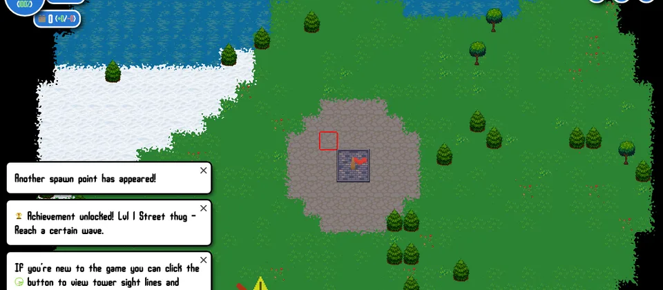

Cover paths
Put towers where they can hit enemies for the longest time.
Open TD
Open TD is a bigger twist on tower defense. The map expands after waves, so your base gets stronger but also harder to protect.
Play Open TD
Basics
Defense
Put towers where they can hit enemies for the longest time.
Only reveal more map when your current base can survive another wave.
Every tenth wave is tougher, so save resources before those waves.